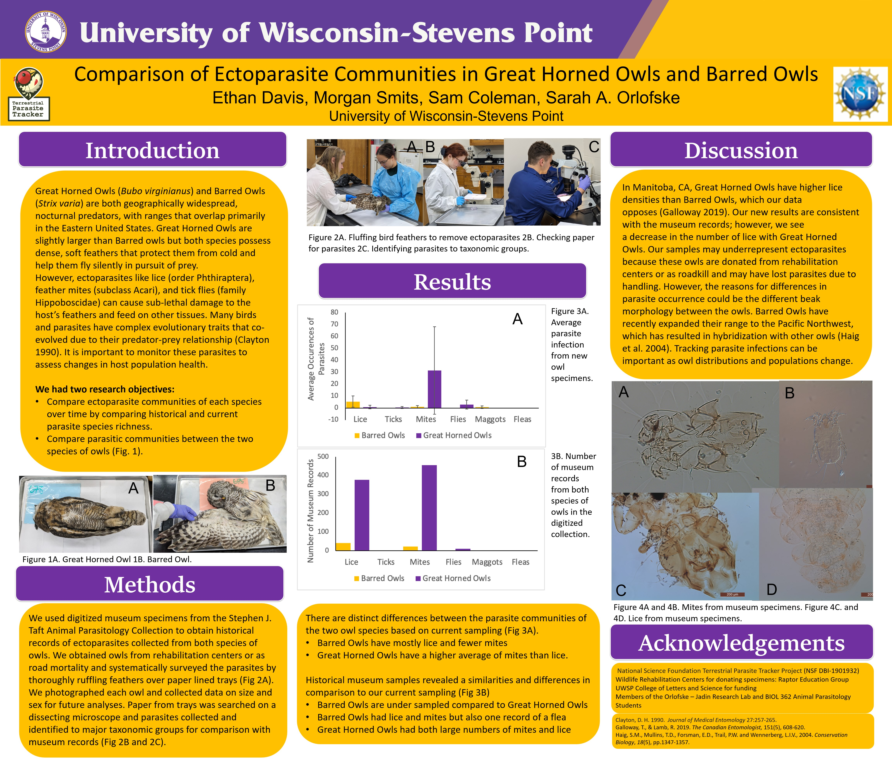

Abstract
Great horned owls (Bubo virginianus) and barred owls (Strix varia) are both geographically widespread, with ranges that overlap primarily in the Eastern United States. Great horned owls often prey upon the smaller barred owls, therefore occupying different trophic levels. Barred owls have recently expanded their range to the Pacific Northwest, which has resulted in hybridization and predation cases with the threatened northern spotted owl (S. occidentalis). This results in ectoparasite transmissions. Ectoparasites such as chewing lice (Phthiraptera), feather mites (Acari), and tick flies (Hippoboscidae) can cause sub-lethal damage to the host’s feathers. Using digitized museum records from the Stephen J. Taft Animal Parasitology Collection and new specimens collected from owls collected from road mortality and rehabilitation centers, we had two research objectives. The first objective was a temporal comparison of ectoparasite communities of each species by comparing historical and current ectoparasite species richness. Second, we wanted to compare the ectoparasite communities between the two species of owls. Our museum records included 12 great horned owl specimens representing 4 ectoparasite species and 6 barred owl specimens representing 1 ectoparasite species. Our preliminary examination of 2 owls collected in 2022-2023 revealed 3 specimens in the family Menoponidae and 11 specimens in the family Philopteridae for great horned owls. One barred owl examined for ectoparasites was uninfected. Our results suggest that great horned owls have a more diverse ectoparasite community, but further data collection is needed to distinguish patterns. Our research highlights how museum collections can be used to address ecological questions.
Scientific Poster

Key Findings
- There are distinct differences between the parasite communities of the two owl species based on current sampling (Fig 3A).
- Barred Owls have mostly lice and fewer mites.
- Great Horned Owls have a higher average of mites than lice. Historical museum samples revealed a similarities and differences in comparison to our current sampling
- Barred Owls are under sampled compared to Great Horned Owls
- Barred Owls had lice and mites but also one record of a flea Great Horned Owls had both large numbers of mites and lice
Selected Figures


Methodology
We used digitized museum specimens from the Stephen J. Taft Animal Parasitology Collection to obtain historical records of ectoparasites collected from both species of owls. We obtained owls from rehabilitation centers or as road mortality and systematically surveyed the parasites by thoroughly ruffling feathers over paper lined trays (Fig 2A). We photographed each owl and collected data on size and sex for future analyses. Paper from trays was searched on a dissecting microscope and parasites collected and identified to major taxonomic groups for comparison with museum records (Fig 2B and 2C).
Conferences & Symposiums
- 2023 Fall COLS Symposium
- 2024 Spring Undergraduate Research Symposium
- 2024 Midwest Association of Parasitologists Annual Meeting (AMCOP 75)